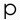
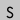

c:\paul_slocum\qotile.net
MUSICAL INSTRUMENTS
cynthcart (c64)
sir sampleton (iOS)
synthcart (atari 2600)
2600 sequencer kit
dot matrix synth
looper (windows)
ART
and/or gallery
andor 1 media player
artwork catalog
spirit surfers
MUSIC
tree wave
> softoft techech ep
music archive
MORE
more atari projects
more software projects
CONTACT / INFO
about
Sorry, but a Javascript-enabled browser is required to email me.


Blog is down for maintenance...